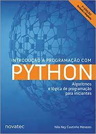

R$15.00
Livro - Algoritmos E Lógica Da Programação Com linguagem simples e didática – sem, no entanto, fugir da complexidade do assunto –, o livro procura tornar prática a lógica de programação, além de mostrar aos estudantes um caminho mais adequado na construção dos algoritmos. O desenvolvimento do raciocínio lógico e da abstração de procedimentos e dados são as maiores dificuldades para os estudantes dos cursos introdutórios. Nesse sentido, os autores resolvem os problemas propostos passo a passo, apresentando todos os conceitos envolvidos por meio de fluxogramas e em conjunto com pseudocódigos.
R$30.00
Livro - Introdução à programação com Python Este livro é orientado ao iniciante em programação. Os conceitos básicos de programação, como expressões, variáveis, repetições, decisões, listas, dicionários, conjuntos, funções, arquivos, classes, objetos e banco de dados com SQLite 3 são apresentados um a um com exemplos e exercícios. A obra visa a explorar a programação de computadores como ferramenta do dia a dia. Ela pode ser lida durante um curso de introdução à programação de computadores e usada como guia de estudo para autodidatas. Para aproveitamento pleno do conteúdo, apenas conhecimentos básicos de informática, como digitar textos, abrir e salvar arquivos, são suficientes. Todo software utilizado no livro pode ser baixado gratuitamente, sendo executado em Windows, Linux e Mac OS X. Embora a linguagem Python (versão +3.7) seja muito poderosa e repleta de recursos modernos de programação, este livro não pretende ensinar a linguagem em si, mas ensinar a programar. Alguns recursos da linguagem não foram utilizados para privilegiar os exercícios de lógica de programação e oferecer uma preparação mais ampla ao leitor para outras linguagens. Essa escolha não impediu a apresentação de recursos poderosos da linguagem, e, embora o livro não seja fundamentalmente uma obra de referência, o leitor encontrará várias notas e explicações de características específicas do Python, além da lógica de programação.